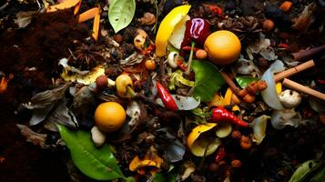
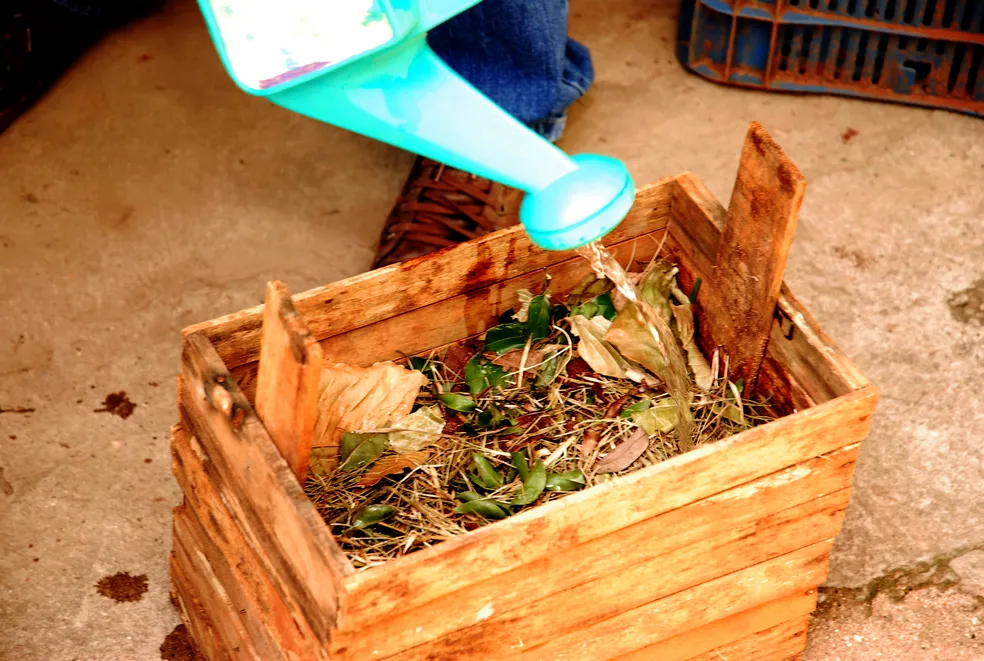
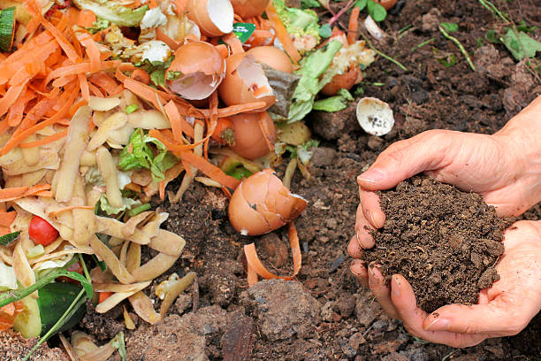

Resíduos Orgânicos
Os resíduos orgânicos são materiais de origem vegetal ou animal, como restos de comida e folhas. Eles podem ser reutilizados como adubo através da compostagem.
Processo de Compostagem
- Separação dos resíduos orgânicos
- Colocação em composteira
- Controle de umidade e aeração
- Decomposição natural
- Transformação em adubo
Recicláveis
- Restos de frutas, legumes e verduras
- Folhas, galhos e grama
- Casca de ovos
- Borra de café e saquinhos de chá
- Restos de comida sem gordura ou tempero
Não Recicláveis
- Restos de carne ou peixe
- Óleo de cozinha
- Fezes de animais
- Produtos industrializados
- Comidas com muito tempero ou gordura
Dicas Práticas

Separe o Lixo
Use um recipiente específico para os resíduos orgânicos, evitando a contaminação com materiais recicláveis.

Faça Compostagem
Monte uma composteira doméstica para transformar os resíduos em adubo e utilizar em hortas e jardins.

Adubo Natural
Utilize o adubo gerado na compostagem para enriquecer o solo de forma natural e sem produtos químicos.
Impacto Ambiental
A gestão adequada dos resíduos orgânicos contribui para a conservação dos recursos naturais e a redução dos efeitos negativos no meio ambiente.
- Redução da poluição do solo e da água
- Diminuição da emissão de gases de efeito estufa
- Preservação da biodiversidade local
- Conservação dos recursos naturais e do solo fértil